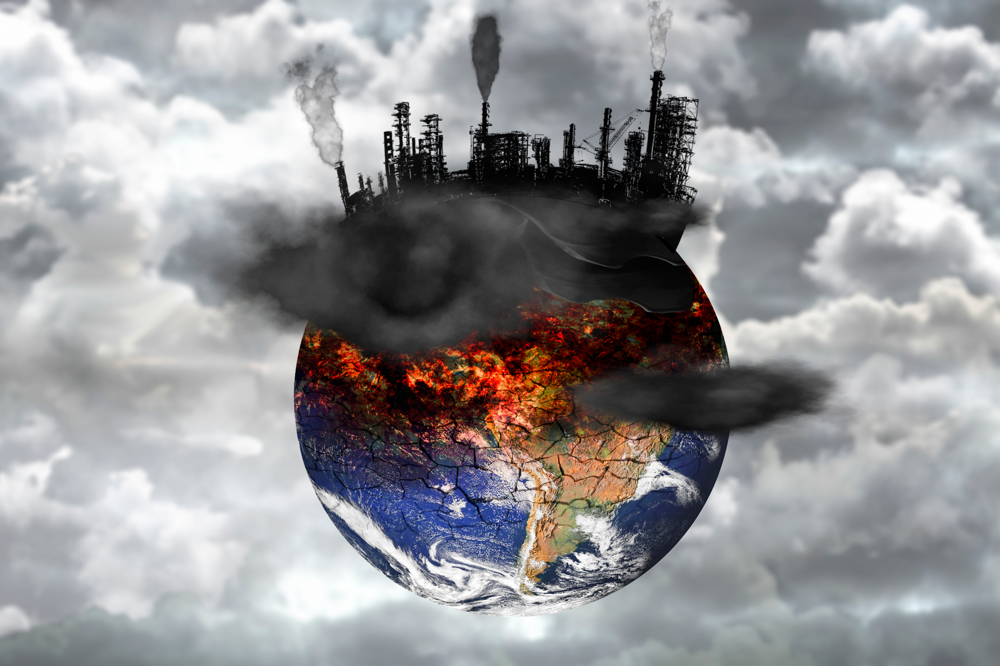

בלימת משבר האקלים 
חסכון במשאבי טבע
חיסכון בכסף

צמצום העוני

שליש מהמזון בעולם הולך לפח !
931 מליון טון של מזון מתבזבזים בשנה אחת !
דו"ח האו"ם מתריע כי יש לפעול מיידית לצמצום הכמויות
אחסון נכון של מזון הוא הפתרון לכך !
המזון שנזרק מייצר כמות גדולה של גז מתאן
כמות זו גדולה פי 2 מהפליטות של מכוניות בישראל ובארה"ב יחד
הגז גורם להתחממות כדור הארץ ומאיץ את משבר האקלים
צמצום בזבוב המזון ע"י אחסון נכון יימנע את הדרדרות הטבע לאחסון
בזבוב המזון כרוך בניצול יתר של משאבי הטבע :
אדמות חקלאיות, כריתת עצים , מים, דשן, כוח אדם, דלק (לשינוע) והרג של בעלי חיים.
הפגיעה הזו בטבע מדללת את המאשבים הקיימים
וגורמת לשחרור של גזי חממה לולהפסדים כלכליים עצומים
צמצום בזבוב המזון יציל את משאבי האבע מחדלון!
משפה ממוצעת מבזבת כ 20% - 30% מכמות המזון שהיא קונה
כמות זו מוערכת בשווי של 2000 דולר לשנה
הצרכנות המוגברת גם מעלה את מחירי המזון ב11%
צמצום בזבוז המזון יחסוך לכם הרבה הון!
לאחד מכל שלושה אנשים בעולם אין גישה למזון כדי לנהל חיים בריאים
למרות זאת נזרקת כמות עצומה של מזון שהייתה מאכילה
פי שניים ממספר האנשים הסובלים מתת תזונה בעולם
צמצום בזבוז המזון ייאפשר גם לעניים להתקיים בגאון!
אחסון שגוי של מזון עלול לגרום לצמיחת חיידקים ועובש
שעלולים לגרום להרעלת מזון ולמחלות חמורות
צמצום בזבוב המזון יציב את הבריאות שלכם במקום הראשון